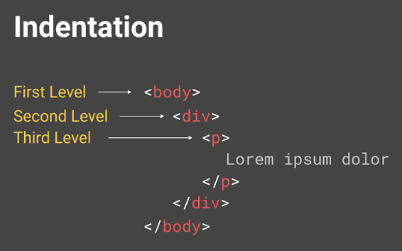

<!--1) ახსენით თქვენი სიტყვებით ტერმინი "ინდენტაცია" და მოიყვანეთ HTML-ის კოდში. დაწერეთ ისეთი კოდი რომელიც აჩვენებს მეოთხე დონის ინდენტაციის მაგალითს. აუცილებლად უნდა გქონდეთ დაყენებული extension "indnet-rainbow" და შეცდომა თუ იყო ინდენტაციაში დავალება არ მიიღება -->
<!-- <html>
    <head>
        <title>indetation</title>
    </head>

    <body>
        <h1>indentation/ინდენტაცია</h1>
        <p>ინდენტაცია გვეხმარება  კოდი სწორად აღვიქვათ</p>
        <p>ინდენტაცია კოდს ხდის უფრო დალაებულს და მარტივად გასაგებს</p>
        
        
        <ol>
            <li>ind</li>
                <ul>
                    <li>level05</li>

                    <li>level05</li>
                </ul>
            <li>ind</li>
        </ol>
    </body>
</html> -->

<!--2) მოცემული სურათის სიგანე შეცვალეთ და გახადეთ 800. სიმაღლეც ისე გამოთვალეთ რომ სურათის ხარისხმა არ დაიკლოს-->

